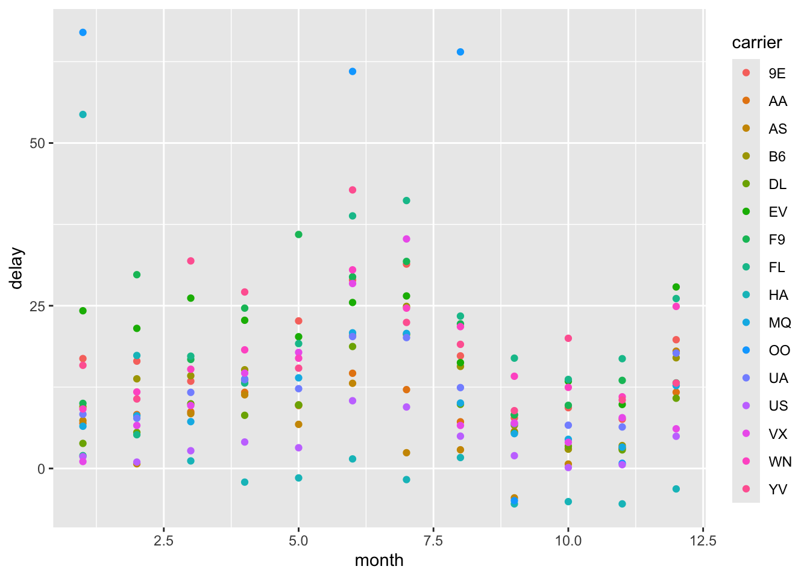

Data Wrangling Examples
These examples are adapted from R4DS https://r4ds.hadley.nz/data-transform.
4.9.1 Filter
These are additional practice to those in the book to reinforce the reading and try by doing. Solutions for each are given below. Our suggestion is to try first and test your skill.
## # A tibble: 336,776 × 19
## year month day dep_time sched_dep_time dep_delay arr_time sched_arr_time
## <int> <int> <int> <int> <int> <dbl> <int> <int>
## 1 2013 1 1 517 515 2 830 819
## 2 2013 1 1 533 529 4 850 830
## 3 2013 1 1 542 540 2 923 850
## 4 2013 1 1 544 545 -1 1004 1022
## 5 2013 1 1 554 600 -6 812 837
## 6 2013 1 1 554 558 -4 740 728
## 7 2013 1 1 555 600 -5 913 854
## 8 2013 1 1 557 600 -3 709 723
## 9 2013 1 1 557 600 -3 838 846
## 10 2013 1 1 558 600 -2 753 745
## # ℹ 336,766 more rows
## # ℹ 11 more variables: arr_delay <dbl>, carrier <chr>, flight <int>,
## # tailnum <chr>, origin <chr>, dest <chr>, air_time <dbl>, distance <dbl>,
## # hour <dbl>, minute <dbl>, time_hour <dttm>- Find all flights that:
# 1.1 Had an arrival delay of two or more hours (10,034 flights)
flights |>
# Had an arrival delay of two or more hours
filter(arr_delay > 120) ## # A tibble: 10,034 × 19
## year month day dep_time sched_dep_time dep_delay arr_time sched_arr_time
## <int> <int> <int> <int> <int> <dbl> <int> <int>
## 1 2013 1 1 811 630 101 1047 830
## 2 2013 1 1 848 1835 853 1001 1950
## 3 2013 1 1 957 733 144 1056 853
## 4 2013 1 1 1114 900 134 1447 1222
## 5 2013 1 1 1505 1310 115 1638 1431
## 6 2013 1 1 1525 1340 105 1831 1626
## 7 2013 1 1 1549 1445 64 1912 1656
## 8 2013 1 1 1558 1359 119 1718 1515
## 9 2013 1 1 1732 1630 62 2028 1825
## 10 2013 1 1 1803 1620 103 2008 1750
## # ℹ 10,024 more rows
## # ℹ 11 more variables: arr_delay <dbl>, carrier <chr>, flight <int>,
## # tailnum <chr>, origin <chr>, dest <chr>, air_time <dbl>, distance <dbl>,
## # hour <dbl>, minute <dbl>, time_hour <dttm>## # A tibble: 9,313 × 19
## year month day dep_time sched_dep_time dep_delay arr_time sched_arr_time
## <int> <int> <int> <int> <int> <dbl> <int> <int>
## 1 2013 1 1 517 515 2 830 819
## 2 2013 1 1 533 529 4 850 830
## 3 2013 1 1 623 627 -4 933 932
## 4 2013 1 1 728 732 -4 1041 1038
## 5 2013 1 1 739 739 0 1104 1038
## 6 2013 1 1 908 908 0 1228 1219
## 7 2013 1 1 1028 1026 2 1350 1339
## 8 2013 1 1 1044 1045 -1 1352 1351
## 9 2013 1 1 1114 900 134 1447 1222
## 10 2013 1 1 1205 1200 5 1503 1505
## # ℹ 9,303 more rows
## # ℹ 11 more variables: arr_delay <dbl>, carrier <chr>, flight <int>,
## # tailnum <chr>, origin <chr>, dest <chr>, air_time <dbl>, distance <dbl>,
## # hour <dbl>, minute <dbl>, time_hour <dttm>- Another useful dplyr filtering helper is between(). What does it do? Can you use it to simplify the code needed to answer 1.7? (hint: look up between in the help menu. You’ll see the required syntax, where x = vector, and left and right at the boundary values. You will also need to add an OR statement to include departure times at exactly 2400 since the dataframe has departures at both 0 and 2400)
## # A tibble: 9,344 × 19
## year month day dep_time sched_dep_time dep_delay arr_time sched_arr_time
## <int> <int> <int> <int> <int> <dbl> <int> <int>
## 1 2013 12 31 13 2359 14 439 437
## 2 2013 12 31 18 2359 19 449 444
## 3 2013 12 31 26 2245 101 129 2353
## 4 2013 12 31 459 500 -1 655 651
## 5 2013 12 31 514 515 -1 814 812
## 6 2013 12 31 549 551 -2 925 900
## 7 2013 12 31 550 600 -10 725 745
## 8 2013 12 31 552 600 -8 811 826
## 9 2013 12 31 553 600 -7 741 754
## 10 2013 12 31 554 550 4 1024 1027
## # ℹ 9,334 more rows
## # ℹ 11 more variables: arr_delay <dbl>, carrier <chr>, flight <int>,
## # tailnum <chr>, origin <chr>, dest <chr>, air_time <dbl>, distance <dbl>,
## # hour <dbl>, minute <dbl>, time_hour <dttm>- How many flights have a missing dep_time? What other variables are missing? What might these rows represent?
4.9.1.1 solutions:
1.1 k <- filter(flights,(arr_delay > 120)) 1.2 k <- filter(flights,dest == “IAH”|dest==“HOU”) 1.3 k <- filter(flights,carrier==“DL”|carrier==“UA”|carrier==“AA”) 1.4 k <- filter(flights,month==7 | month==8 | month==9) 1.5 k <- filter(flights,arr_delay >120 & dep_delay == 0) 1.6 filter(flights,dep_delay >60 & arr_delay <(dep_delay-30))) 1.7 k <- filter(flights,dep_time==2400 | (dep_time<0601)) 2. m <- filter(flights,between(dep_time,0,0600)|dep_time==2400) 3. y <- filter(flights, is.na(dep_time))
4.9.2 Arrange
- Use desc() to re-order by a column in descending order:
## # A tibble: 336,776 × 19
## year month day dep_time sched_dep_time dep_delay arr_time sched_arr_time
## <int> <int> <int> <int> <int> <dbl> <int> <int>
## 1 2013 12 31 13 2359 14 439 437
## 2 2013 12 31 18 2359 19 449 444
## 3 2013 12 31 26 2245 101 129 2353
## 4 2013 12 31 459 500 -1 655 651
## 5 2013 12 31 514 515 -1 814 812
## 6 2013 12 31 549 551 -2 925 900
## 7 2013 12 31 550 600 -10 725 745
## 8 2013 12 31 552 600 -8 811 826
## 9 2013 12 31 553 600 -7 741 754
## 10 2013 12 31 554 550 4 1024 1027
## # ℹ 336,766 more rows
## # ℹ 11 more variables: arr_delay <dbl>, carrier <chr>, flight <int>,
## # tailnum <chr>, origin <chr>, dest <chr>, air_time <dbl>, distance <dbl>,
## # hour <dbl>, minute <dbl>, time_hour <dttm>Sort flights to find the most delayed flights. Find the flights that left earliest.
Sort flights to find the fastest (highest speed) flights. Here you are creating a metric by using the existing data in the dataframe to calculate speed.
Which flights traveled the farthest? Which traveled the shortest?
(flights 1632 and 51)
## # A tibble: 336,776 × 19
## year month day dep_time sched_dep_time dep_delay arr_time sched_arr_time
## <int> <int> <int> <int> <int> <dbl> <int> <int>
## 1 2013 1 1 857 900 -3 1516 1530
## 2 2013 1 2 909 900 9 1525 1530
## 3 2013 1 3 914 900 14 1504 1530
## 4 2013 1 4 900 900 0 1516 1530
## 5 2013 1 5 858 900 -2 1519 1530
## 6 2013 1 6 1019 900 79 1558 1530
## 7 2013 1 7 1042 900 102 1620 1530
## 8 2013 1 8 901 900 1 1504 1530
## 9 2013 1 9 641 900 1301 1242 1530
## 10 2013 1 10 859 900 -1 1449 1530
## # ℹ 336,766 more rows
## # ℹ 11 more variables: arr_delay <dbl>, carrier <chr>, flight <int>,
## # tailnum <chr>, origin <chr>, dest <chr>, air_time <dbl>, distance <dbl>,
## # hour <dbl>, minute <dbl>, time_hour <dttm>4.9.3 Mutate - adds a new column
#flights1 <-
flights |> mutate(check_arr_delay = sched_arr_time - arr_time,
check_dep_delay = sched_dep_time - dep_time) #-> ## # A tibble: 336,776 × 21
## year month day dep_time sched_dep_time dep_delay arr_time sched_arr_time
## <int> <int> <int> <int> <int> <dbl> <int> <int>
## 1 2013 1 1 517 515 2 830 819
## 2 2013 1 1 533 529 4 850 830
## 3 2013 1 1 542 540 2 923 850
## 4 2013 1 1 544 545 -1 1004 1022
## 5 2013 1 1 554 600 -6 812 837
## 6 2013 1 1 554 558 -4 740 728
## 7 2013 1 1 555 600 -5 913 854
## 8 2013 1 1 557 600 -3 709 723
## 9 2013 1 1 557 600 -3 838 846
## 10 2013 1 1 558 600 -2 753 745
## # ℹ 336,766 more rows
## # ℹ 13 more variables: arr_delay <dbl>, carrier <chr>, flight <int>,
## # tailnum <chr>, origin <chr>, dest <chr>, air_time <dbl>, distance <dbl>,
## # hour <dbl>, minute <dbl>, time_hour <dttm>, check_arr_delay <int>,
## # check_dep_delay <int>4.9.4 Select
flights |> mutate(check_arr_delay = arr_time - sched_arr_time,
check_dep_delay = sched_dep_time - dep_time) |>
select(arr_time, sched_arr_time, check_arr_delay, arr_delay) |>
mutate(arr_check_boolean = arr_delay == check_arr_delay) |>
filter(arr_check_boolean == FALSE)## # A tibble: 114,963 × 5
## arr_time sched_arr_time check_arr_delay arr_delay arr_check_boolean
## <int> <int> <int> <dbl> <lgl>
## 1 923 850 73 33 FALSE
## 2 913 854 59 19 FALSE
## 3 854 902 -48 -8 FALSE
## 4 858 910 -52 -12 FALSE
## 5 858 915 -57 -17 FALSE
## 6 807 735 72 32 FALSE
## 7 1039 1100 -61 -21 FALSE
## 8 909 840 69 29 FALSE
## 9 1016 947 69 29 FALSE
## 10 1028 940 88 48 FALSE
## # ℹ 114,953 more rows## Warning: There was 1 warning in `mutate()`.
## ℹ In argument: `arr_time = lubridate::hm(arr_time)`.
## Caused by warning in `.parse_hms()`:
## ! Some strings failed to parse## # A tibble: 6 × 19
## year month day dep_time sched_dep_time dep_delay arr_time sched_arr_time
## <int> <int> <int> <int> <int> <dbl> <Period> <int>
## 1 2013 1 1 517 515 2 NA 819
## 2 2013 1 1 533 529 4 NA 830
## 3 2013 1 1 542 540 2 NA 850
## 4 2013 1 1 544 545 -1 NA 1022
## 5 2013 1 1 554 600 -6 NA 837
## 6 2013 1 1 554 558 -4 NA 728
## # ℹ 11 more variables: arr_delay <dbl>, carrier <chr>, flight <int>,
## # tailnum <chr>, origin <chr>, dest <chr>, air_time <dbl>, distance <dbl>,
## # hour <dbl>, minute <dbl>, time_hour <dttm>4.9.5 Grouped summaries
To make summary tables we will use the pipe combining group_by and
summarize.
summary_FlightDelay <-
# I like to use a new line here so that I can easily comment out the
# assignment while building my pipe
flights |>
group_by(month, carrier) |> # group flights by month
summarise(delay = mean(dep_delay, na.rm = TRUE)) # make a new column of average dep delay## `summarise()` has grouped output by 'month'. You can override using the
## `.groups` argument.
We could also figure out which carrier had the longest and shortest delay in December, if we were trying to plan a timely winter break flight.
carrier_delay <- # I like to use a new line here so that I can easily comment out this assignment line while building my pipe
flights |>
arrange(-distance) |>
filter(month == 12) |>
select(flight, dep_delay, carrier)
carrier_delay## # A tibble: 28,135 × 3
## flight dep_delay carrier
## <int> <dbl> <chr>
## 1 51 -2 HA
## 2 51 -10 HA
## 3 51 3 HA
## 4 51 -10 HA
## 5 51 -6 HA
## 6 51 -3 HA
## 7 51 5 HA
## 8 51 -2 HA
## 9 51 0 HA
## 10 51 -1 HA
## # ℹ 28,125 more rowscarrier_delay |>
group_by(carrier) |> # want to find the average for each carrier
summarise(average_dep_delay = mean(dep_delay, na.rm = TRUE)) |>
# calculate average delay
arrange(average_dep_delay)## # A tibble: 15 × 2
## carrier average_dep_delay
## <chr> <dbl>
## 1 HA -3.14
## 2 US 4.94
## 3 VX 6.10
## 4 DL 10.8
## 5 AA 11.7
## 6 MQ 12.7
## 7 YV 13.1
## 8 F9 13.1
## 9 B6 17.0
## 10 UA 17.7
## 11 AS 18.0
## 12 9E 19.8
## 13 WN 24.9
## 14 FL 26.1
## 15 EV 27.9